Praktikum ini bertujuan supaya mahasiswa mampu mengelola
perpindahan antar halaman (layar) pada aplikasi Flutter. Secara
lebih rinci, setelah menyelesaikan praktikum ini mahasiswa
diharapkan mampu menerapkan Navigator.push untuk
berpindah ke layar baru, menggunakan
Navigator.pop untuk menutup layar setelah suatu aksi
selesai, serta mengirim data bertipe String dan
int antar layar melalui
Constructor.
Konsep tersebut diterapkan pada studi kasus aplikasi
Expense Tracker yang terdiri dari halaman Dashboard,
halaman Detail Transaksi, dan halaman form Catat Transaksi. Pada
bagian latihan, mahasiswa menambahkan input Tanggal Transaksi pada
form menggunakan showDatePicker lengkap dengan
validasi wajib diisi.
Navigator adalah widget pengelola rute (halaman) pada Flutter yang bekerja seperti tumpukan kartu (stack). Setiap halaman dipandang sebagai sebuah route yang ditumpuk satu di atas yang lain, dan halaman yang tampil di layar selalu halaman yang berada di tumpukan paling atas. Prinsip kerjanya adalah LIFO (Last In, First Out): halaman yang terakhir dibuka menjadi halaman yang pertama ditutup.
Navigator.push (maju) meletakkan halaman baru di
tumpukan teratas sehingga halaman lama tidak dihapus, hanya
tertutup di bawahnya. Method ini membutuhkan
context dan sebuah route, umumnya
MaterialPageRoute yang properti
builder-nya mengembalikan widget halaman tujuan.
Karena halaman lama masih ada di dalam stack,
AppBar pada halaman baru otomatis menampilkan tombol
panah kiri (back).
Navigator.pop (mundur) menghapus atau menutup
halaman teratas sehingga tampilan kembali ke halaman di bawahnya.
Method ini juga dapat membawa nilai balik melalui
Navigator.pop(context, nilai), namun pada praktikum
ini pop hanya dipakai untuk menutup layar.
Constructor & Passing Data: untuk mengirim
data dari Halaman A ke Halaman B, Halaman B harus menyiapkan
variabel dan constructor.
Variabel final berfungsi sebagai penampung data
(misalnya title), sedangkan kata kunci
required menandai bahwa data tersebut wajib diisi
saat berpindah layar. Variabel dibuat final karena
StatelessWidget bersifat immutable, sehingga nilainya
tidak boleh berubah setelah widget dibuat.
showDatePicker adalah fungsi bawaan Flutter yang
menampilkan dialog kalender. Fungsi ini mengembalikan
Future<DateTime?>, sehingga pemanggilannya
menggunakan async/await, dan hasilnya bernilai
null apabila pengguna menutup dialog tanpa memilih
tanggal.
- Laptop / Komputer dengan Flutter SDK dan Dart terinstall
- Visual Studio Code (Code Editor) dengan ekstensi Flutter & Dart
- Chrome Browser / Android Emulator sebagai target device untuk menjalankan aplikasi
- Modul Praktikum Aplikasi Mobile — Praktikum IV: Navigasi & Passing Data
Praktikum ini terdiri dari empat file yang dibuat di dalam folder
lib, yaitu main.dart sebagai pintu masuk
aplikasi, transaction_detail_screen.dart sebagai
halaman penerima data, dashboard_screen.dart sebagai
halaman utama yang mengirim data dan membuka form, serta
add_transaction_screen.dart sebagai form yang menutup
dirinya sendiri dengan Navigator.pop. Setiap file
dikerjakan berurutan beserta penjelasan kodenya.
Langkah pertama adalah membuat file main.dart di
dalam folder lib. File ini menjalankan aplikasi,
memanggil MyApp, dan menetapkan
DashboardScreen sebagai halaman pertama yang
dimuat.
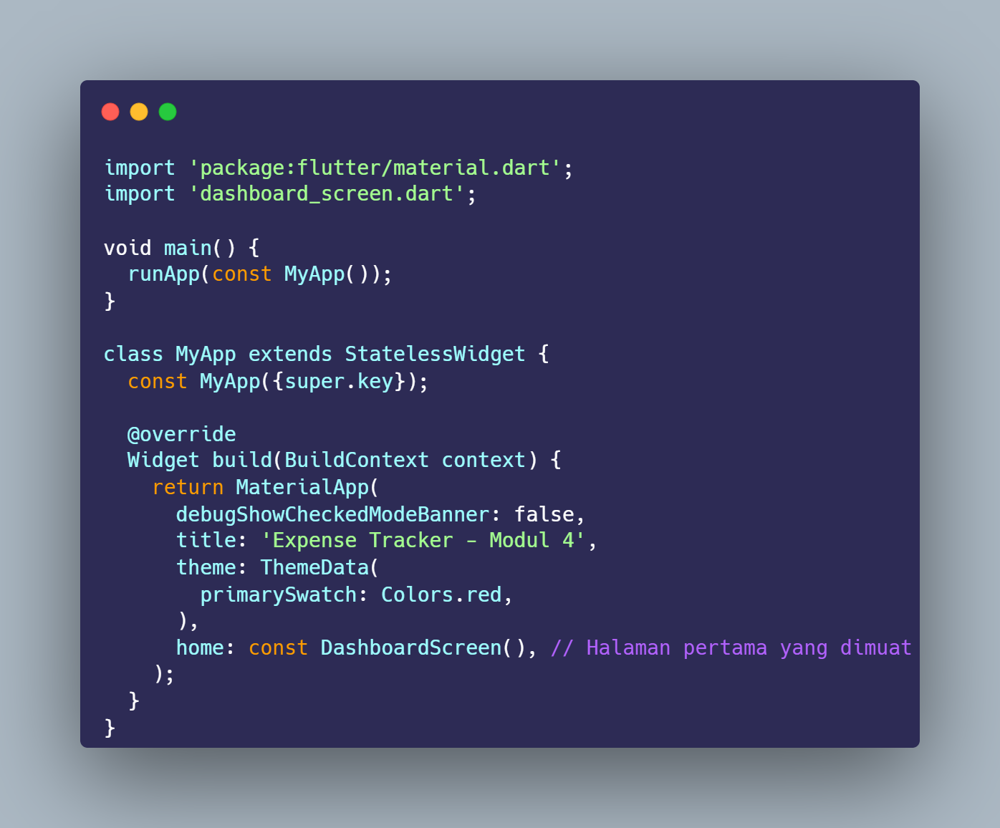
Baris
import 'dashboard_screen.dart'; menghubungkan
main.dart dengan file dashboard, sementara
void main() { runApp(const MyApp()); } adalah
titik masuk yang menjalankan widget MyApp. Widget
ini berupa StatelessWidget karena tidak memiliki
data yang berubah.
-
debugShowCheckedModeBanner: false— menyembunyikan pita "DEBUG" di pojok kanan atas layar. -
title: 'Expense Tracker - Modul 4'— judul aplikasi yang dikenali sistem. -
theme: ThemeData(primarySwatch: Colors.red)— mengatur warna utama aplikasi menjadi merah sesuai slide Modul 4. -
home: const DashboardScreen()— halaman pertama yang tampil ketika aplikasi dijalankan.
primarySwatch tidak selalu mewarnai
AppBar secara otomatis. Karena itu, setiap
AppBar pada praktikum ini juga diberi
backgroundColor: Colors.red dan
foregroundColor: Colors.white agar warnanya
konsisten.
File transaction_detail_screen.dart dibuat sebagai
halaman tujuan. Sesuai teori, halaman tujuan harus menyiapkan
variabel penampung data dan constructor yang mewajibkan data
tersebut diisi.
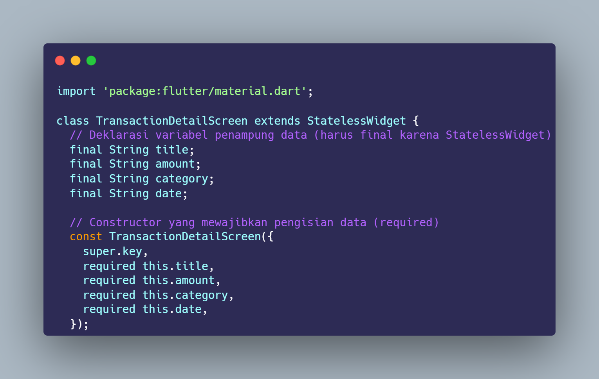
Class
TransactionDetailScreen extends StatelessWidget
memiliki empat variabel final String, yaitu
title, amount,
category, dan date. Keempatnya
bertipe final karena
StatelessWidget tidak boleh mengubah datanya
setelah dibuat.
-
const TransactionDetailScreen({...})— constructor bernama parameter (named parameter) yang bersifatconst. -
super.key— meneruskankeywidget ke class induk. -
required this.title(dan tiga lainnya) — memasukkan nilai parameter langsung ke variabel milik class, sekaligus mewajibkan halaman pengirim mengisinya. Bila ada yang terlewat, kode akan error saat dikompilasi.
Data yang sudah diterima kemudian ditampilkan pada method
build() menggunakan Scaffold,
Column, dan beberapa widget Text.
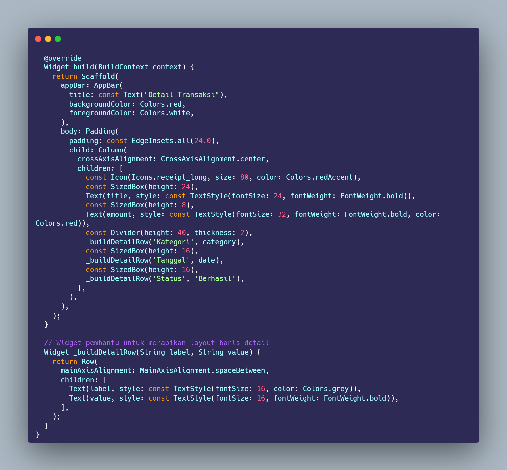
AppBar berjudul "Detail Transaksi" diberi warna
merah dan teks putih. Isi halaman dibungkus
Padding(all: 24) dan Column dengan
crossAxisAlignment: CrossAxisAlignment.center
agar semua elemen berada di tengah.
-
Icon(Icons.receipt_long, size: 80, color: Colors.redAccent)— ikon struk berukuran besar sebagai penanda halaman. -
Text(title, ...)berukuran 24 tebal danText(amount, ...)berukuran 32 tebal berwarna merah — inilah tempat data hasil passing data ditampilkan. -
Divider(height: 40, thickness: 2)— garis pemisah antara ringkasan dan rincian. -
_buildDetailRow('Kategori', category)dan_buildDetailRow('Tanggal', date)— memakai data kiriman, sedangkan_buildDetailRow('Status', 'Berhasil')berisi teks tetap.
Method
_buildDetailRow(String label, String value)
adalah widget pembantu berupa Row dengan
mainAxisAlignment: MainAxisAlignment.spaceBetween: label abu-abu di kiri dan nilai tebal di kanan, sehingga
pembuatan tiga baris detail tidak perlu menulis kode berulang.
File dashboard_screen.dart adalah halaman utama.
Pada langkah ini dibuat kerangka Scaffold beserta
tombol mengambang (FAB) yang berpindah ke halaman form
menggunakan Navigator.push.
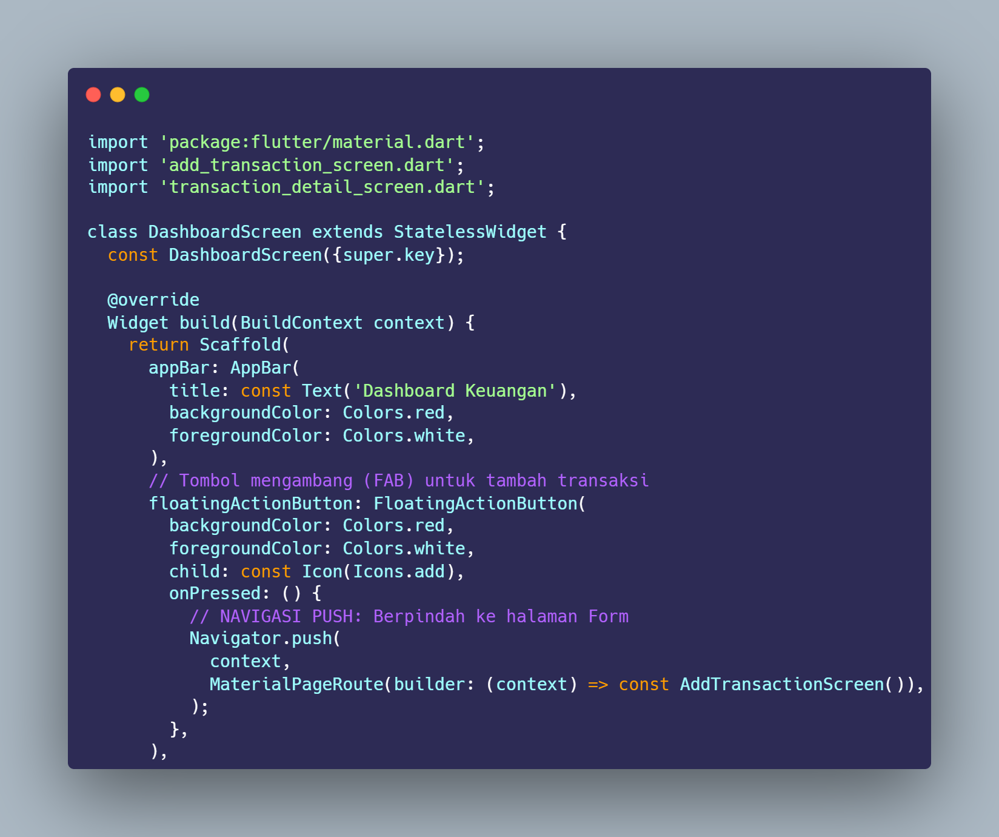
Dua baris import, yaitu
add_transaction_screen.dart dan
transaction_detail_screen.dart, dibutuhkan agar
class AddTransactionScreen dan
TransactionDetailScreen dapat dipanggil dari file
ini.
-
AppBar(title: const Text('Dashboard Keuangan'))— judul halaman, berwarna latar merah dengan teks putih. -
FloatingActionButton— tombol bulat merah berikonIcons.adddi pojok kanan bawah.
//h
-
Navigator.push(context, MaterialPageRoute(builder: (context) => const AddTransactionScreen()))— meletakkan halaman form di atas tumpukan.contextmenunjukkan posisi widget di tree, sedangkanMaterialPageRoutemembungkus halaman tujuan beserta animasi transisinya.
Bagian body berupa
SingleChildScrollView agar halaman dapat digulir
bila isinya melebihi layar.
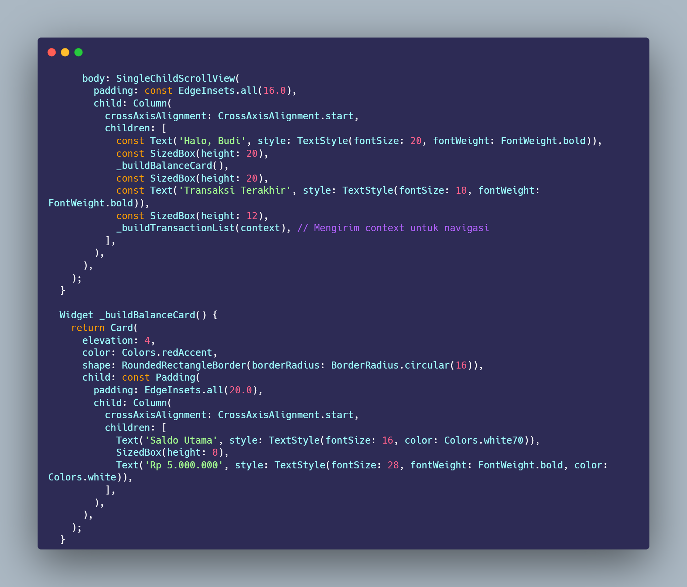
Column dengan
crossAxisAlignment: CrossAxisAlignment.start
menata elemen rata kiri: teks
'Halo, Saskia' berukuran 20 tebal, kartu saldo,
judul 'Transaksi Terakhir', lalu daftar
transaksi. SizedBox(height: ...) dipakai sebagai
jarak antar elemen.
-
_buildBalanceCard()— mengembalikanCarddenganelevation: 4, warnaColors.redAccent, dan sudut membulatBorderRadius.circular(16). -
Isinya
Text('Saldo Utama')berwarna putih transparan (Colors.white70) danText('Rp 5.000.000')berukuran 28 tebal putih. -
_buildTransactionList(context)—contextsengaja dikirim sebagai argumen karena method ini berada di luarbuild()tetapi memerlukancontextuntukNavigator.push.
Item transaksi dibuat dengan ListTile di dalam
Card. Fungsi onTap ditambahkan agar
ketika baris diketuk, aplikasi berpindah ke halaman detail
sambil membawa data baris tersebut.
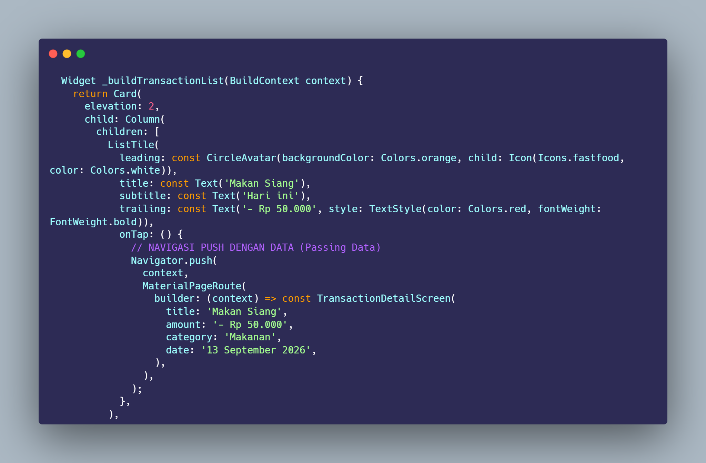
ListTile tersusun dari
leading berupa CircleAvatar oranye
dengan ikon Icons.fastfood,
title "Makan Siang", subtitle "Hari
ini", dan trailing "- Rp 50.000" berwarna merah
tebal.
Di dalam onTap,
Navigator.push dipanggil dengan
MaterialPageRoute yang builder-nya
membuat TransactionDetailScreen dan mengisi
constructor-nya: title: 'Makan Siang',
amount: '- Rp 50.000',
category: 'Makanan', dan
date: '13 September 2026'. Inilah inti
passing data via constructor: nilai diisikan saat
objek halaman tujuan dibuat. Kata kunci
const dapat dipakai karena semua nilainya
konstanta.
Satu item transaksi lagi ditambahkan untuk membuktikan bahwa halaman detail menyesuaikan isinya dengan baris yang diketuk.
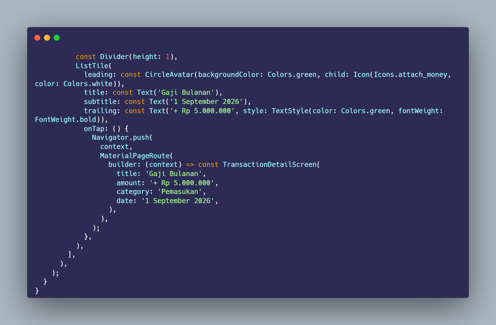
Divider(height: 1) memberi garis tipis di antara
dua item. ListTile kedua berisi ikon
Icons.attach_money dengan latar hijau, judul
"Gaji Bulanan", subjudul "1 September 2026", dan nominal "+ Rp
5.000.000" berwarna hijau tebal.
Data yang dikirim berbeda: title: 'Gaji Bulanan',
amount: '+ Rp 5.000.000',
category: 'Pemasukan', dan
date: '1 September 2026'. Karena kelas tujuannya
sama tetapi datanya berbeda, halaman detail akan menampilkan
isi yang sesuai dengan baris yang diketuk.
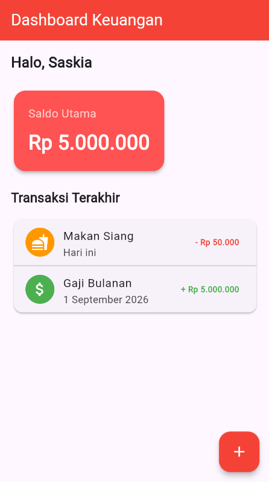
Aplikasi dijalankan dan Dashboard tampil dengan kartu saldo
serta dua transaksi. Setelah baris "Makan Siang" diketuk,
halaman Detail Transaksi terbuka dengan judul, nominal,
kategori, dan tanggal yang sesuai dengan data baris. Tombol
panah kiri muncul otomatis di AppBar karena halaman
dibuka dengan Navigator.push, dan menekannya
mengeluarkan halaman detail dari stack sehingga Dashboard tampil
kembali.
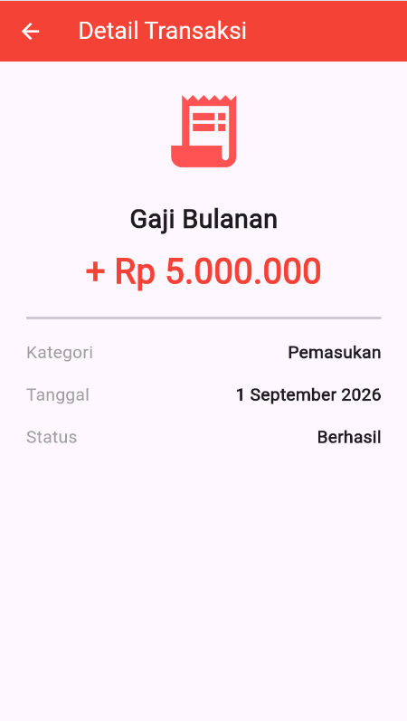
Halaman detail yang sama kini menampilkan "Gaji Bulanan", "+ Rp 5.000.000", kategori "Pemasukan", dan tanggal "1 September 2026". Ini membuktikan data dikirim per baris melalui constructor, bukan ditulis tetap di halaman detail.
Navigator.push dan passing data via
constructor pada dashboard_screen.dart telah
berfungsi dengan benar.
File add_transaction_screen.dart (hasil Modul 3)
adalah form pencatatan transaksi. Form dibuat sebagai
StatefulWidget karena mengelola state berupa
inputan pengguna.
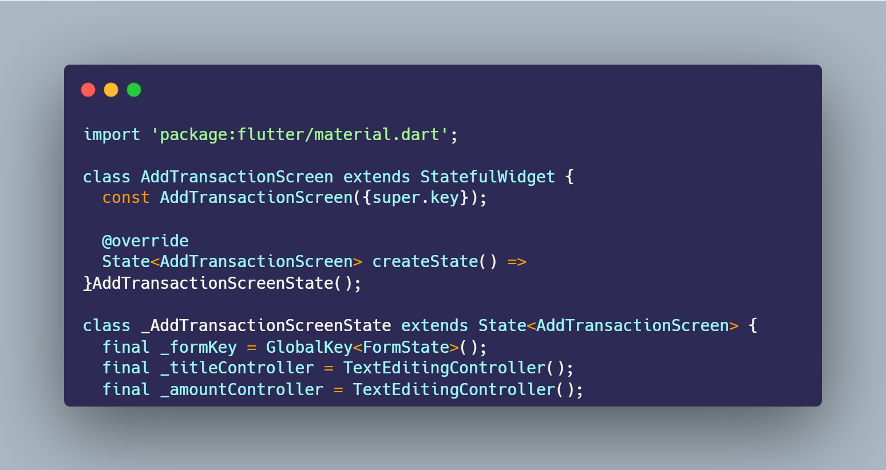
createState() menghubungkan widget dengan class
State _AddTransactionScreenState. Di dalamnya,
GlobalKey<FormState> bernama
_formKey dipakai untuk memicu validasi seluruh
field sekaligus, sedangkan _titleController dan
_amountController bertipe
TextEditingController untuk mengelola teks
inputan Judul dan Nominal.
Body form dibungkus Padding, Form, dan
Column yang berisi dua
TextFormField beserta validator.
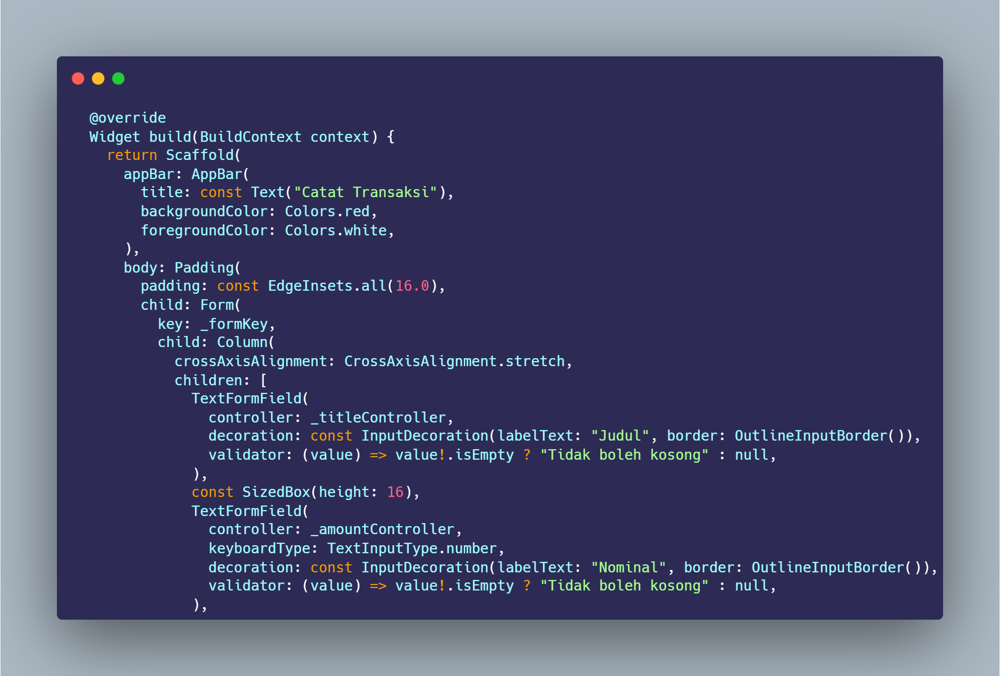
Form(key: _formKey) menghubungkan form dengan
_formKey, dan
crossAxisAlignment: CrossAxisAlignment.stretch
membuat elemen melebar penuh. Field Judul memakai
controller: _titleController, sedangkan field
Nominal ditambah
keyboardType: TextInputType.number agar yang
muncul keyboard angka.
Keduanya memakai InputDecoration berupa
labelText dan OutlineInputBorder(),
serta
validator: (value) => value!.isEmpty ? "Tidak boleh
kosong" : null. Validator mengembalikan pesan error bila field kosong dan
null bila valid.
Form diharapkan tertutup otomatis dan kembali ke Dashboard
setelah tombol Simpan ditekan. Hal ini dilakukan dengan
Navigator.pop pada onPressed tombol.
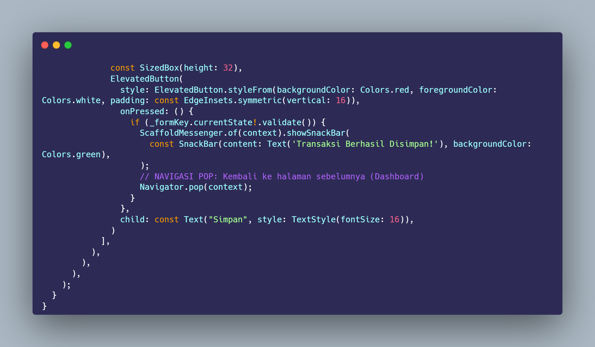
ElevatedButton.styleFrom(...) mengatur warna
latar merah, teks putih, dan padding vertikal 16. Logika
utamanya ada di onPressed:
-
if (_formKey.currentState!.validate())— menjalankan seluruh validator; blok di dalamnya hanya berjalan bila semua field valid. -
ScaffoldMessenger.of(context).showSnackBar(...)— menampilkan notifikasi hijau "Transaksi Berhasil Disimpan!". -
Navigator.pop(context)— mengeluarkanAddTransactionScreendari tumpukan, sehingga Dashboard yang ada di bawahnya tampil kembali. Karena tidak ada nilai kedua,popdi sini hanya menutup layar tanpa membawa data balik.
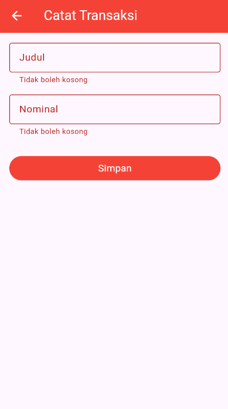
Tombol "+" pada Dashboard membuka form Catat Transaksi lewat
Navigator.push. Saat tombol Simpan ditekan dalam
keadaan kosong, validate() bernilai
false sehingga pesan error muncul dan
Navigator.pop tidak dijalankan; form tetap terbuka.
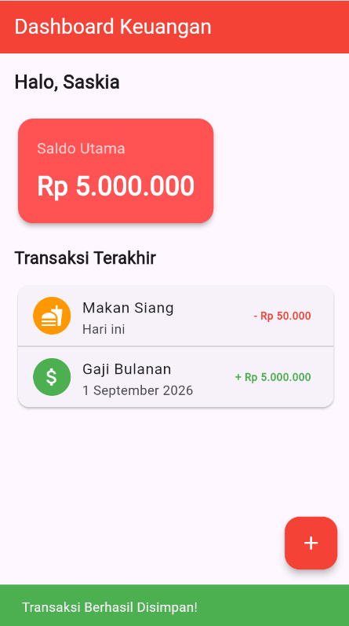
Setelah kedua field diisi dan tombol Simpan ditekan, SnackBar
hijau muncul dan form langsung tertutup, kembali ke Dashboard.
Ini menunjukkan Navigator.pop bekerja sesuai teori.
Navigator.pop pada
add_transaction_screen.dart berfungsi dengan benar.
Perubahan hanya dilakukan pada
add_transaction_screen.dart. Langkah pertama adalah
menyiapkan controller khusus untuk menampung teks tanggal.
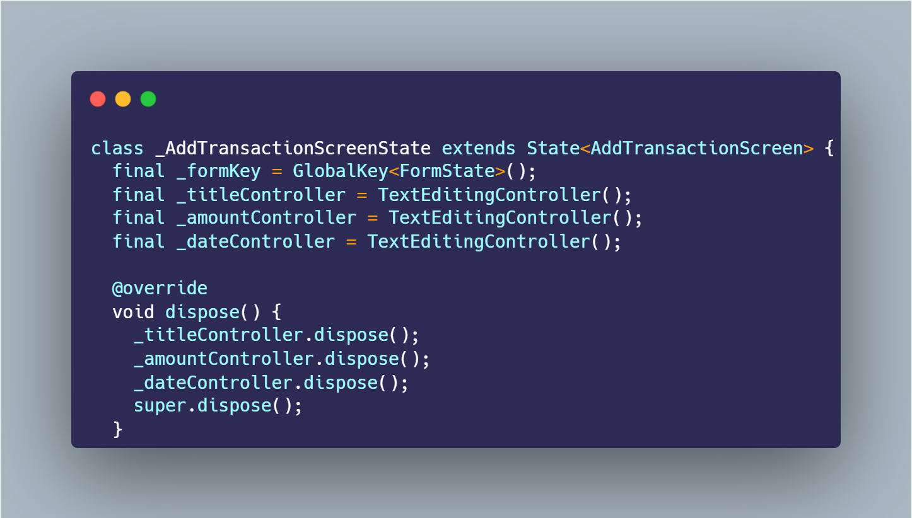
final _dateController = TextEditingController();
menampung teks tanggal yang muncul di field. Method
dispose() ditambahkan untuk memanggil
dispose() pada _titleController,
_amountController, dan
_dateController, lalu
super.dispose(), sehingga resource dibersihkan
saat halaman ditutup dan tidak terjadi kebocoran memori.
Fungsi terpisah dibuat untuk menampilkan kalender dan mengisi controller dengan tanggal terpilih.
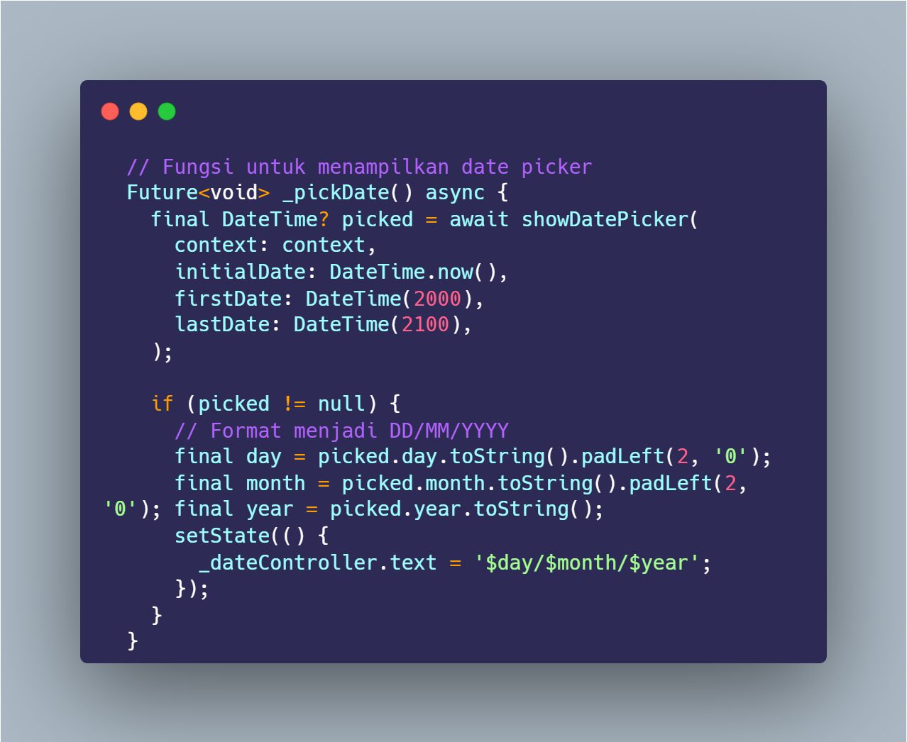
-
Future<void> _pickDate() async— fungsi asinkron karena menunggu pengguna memilih tanggal. -
final DateTime? picked = await showDatePicker(context: context, initialDate: DateTime.now(), firstDate: DateTime(2000), lastDate: DateTime(2100));— menampilkan kalender yang terbuka di tanggal hari ini dengan rentang pilihan tahun 2000 sampai 2100. HasilnyaDateTime?yang bisanull. -
if (picked != null)— memastikan pengguna benar-benar memilih tanggal, bukan menutup dialog. -
picked.day.toString().padLeft(2, '0')— mengubah angka menjadi teks dua digit (misalnya 5 menjadi 05), begitu pula untuk bulan; tahun langsung diubah ke teks. -
setState(() { _dateController.text = '$day/$month/$year'; })— mengisi field dengan format DD/MM/YYYY dan memperbarui tampilan.
Field tanggal diletakkan setelah field Nominal dan sebelum tombol Simpan, sesuai perintah tugas.
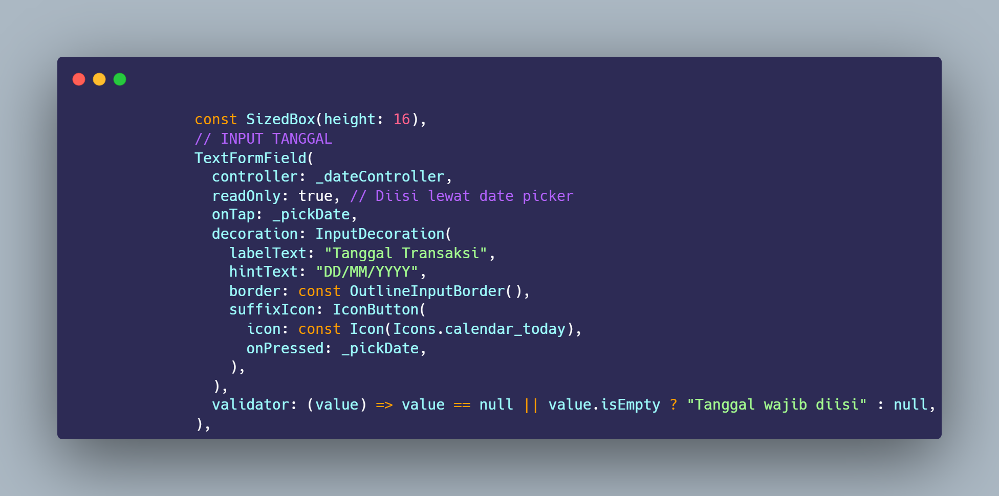
-
controller: _dateController— menghubungkan field dengan controller tanggal. -
readOnly: true— field tidak bisa diketik manual sehingga format selalu konsisten dan bebas salah ketik. -
onTap: _pickDate— mengetuk field membuka kalender. -
labelText: "Tanggal Transaksi"danhintText: "DD/MM/YYYY"— label dan contoh format. -
suffixIcon: IconButton(icon: const Icon(Icons.calendar_today), onPressed: _pickDate)— tombol ikon kalender di sisi kanan yang juga memanggil_pickDate.
Field tanggal juga diberi validator agar form tidak bisa disimpan bila tanggal belum dipilih.
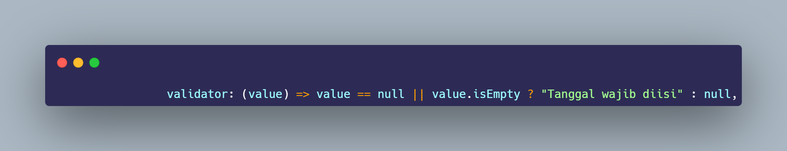
validator: (value) => value == null || value.isEmpty ?
"Tanggal wajib diisi" : null
mengembalikan pesan error bila nilai null atau
kosong dan null bila sudah terisi. Karena field
ini berada di dalam Form yang sama,
_formKey.currentState!.validate() pada tombol
Simpan otomatis ikut memeriksanya, dan
Navigator.pop hanya berjalan bila field tanggal
terisi.
Aplikasi dijalankan untuk memeriksa tiga skenario: kalender muncul, tanggal masuk ke field dengan format benar, dan validasi menolak field kosong.
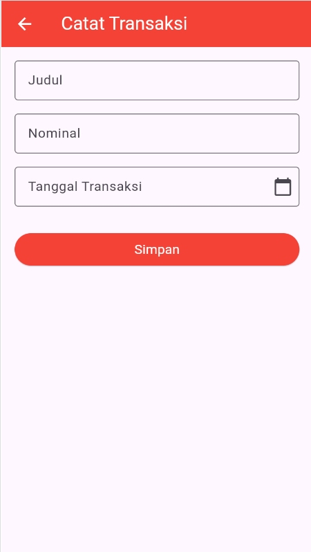
Field Tanggal Transaksi dengan ikon kalender kini berada tepat sebelum tombol Simpan.
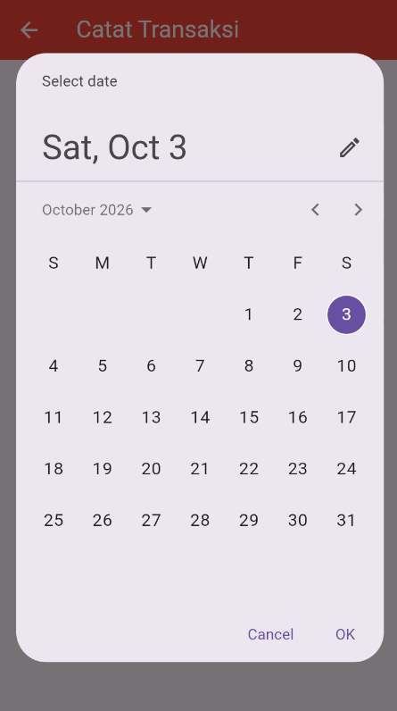
Mengetuk field atau ikon kalender memunculkan dialog kalender. Setelah tanggal dipilih dan dikonfirmasi, field terisi otomatis dengan format DD/MM/YYYY.
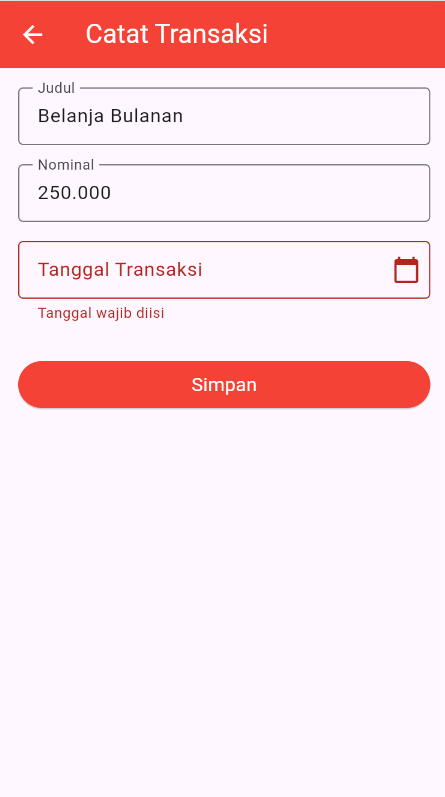
Saat tanggal belum dipilih, muncul pesan "Tanggal wajib diisi"
dan form tidak tertutup, karena validate() bernilai
false.
Bila Judul, Nominal, dan Tanggal terisi, SnackBar muncul dan
form tertutup lewat Navigator.pop.
showDatePicker terbuka, tanggal terformat
DD/MM/YYYY, dan validasi menolak tanggal kosong, menandakan
tugas input tanggal telah berfungsi dengan baik.
Melalui Praktikum 4 ini, implementasi navigasi antar halaman dan pengiriman data pada Flutter berhasil diselesaikan pada aplikasi Expense Tracker yang terdiri dari tiga halaman: Dashboard, Detail Transaksi, dan Catat Transaksi.
Pada dashboard_screen.dart,
Navigator.push dengan
MaterialPageRoute terbukti membuka halaman baru di
atas tumpukan, baik dari tombol FAB menuju form maupun dari
ListTile menuju halaman detail. Pada halaman detail,
data title, amount,
category, dan date berhasil dikirim
lewat constructor berparameter required dan tampil
sesuai baris yang diketuk. Tombol panah kiri pada
AppBar muncul otomatis karena halaman sebelumnya
masih ada di stack.
Pada add_transaction_screen.dart,
Navigator.pop(context) berhasil menutup form dan
mengembalikan tampilan ke Dashboard setelah data valid disimpan,
sedangkan input kosong tertahan oleh validasi. Pada bagian
latihan, field Tanggal Transaksi berhasil dibuat dengan
showDatePicker: tanggal terformat DD/MM/YYYY, field
bersifat readOnly sehingga aman dari salah ketik, dan
validasi wajib diisi bekerja bersama validator Judul dan Nominal.
Perlu dicatat bahwa Navigator.pop(context) pada form
belum membawa data balik ke Dashboard, sehingga transaksi dan
tanggal yang diinput belum muncul di daftar. Hal ini sesuai
lingkup modul, dan dapat dikembangkan dengan
Navigator.pop(context, data).
Berdasarkan seluruh tahapan praktikum yang telah dilaksanakan, diperoleh beberapa kesimpulan penting:
-
Navigator mengelola halaman dengan konsep
tumpukan (stack):
Navigator.pushmenaruh halaman baru di atas, sedangkanNavigator.popmenutup halaman teratas untuk kembali ke halaman sebelumnya. -
MaterialPageRoutedengan propertibuildermenjadi cara standar membuat route, dan halaman yang dibuka denganpushotomatis memiliki tombol back diAppBar. -
Passing data via constructor dilakukan dengan
menyiapkan variabel
finaldan parameterrequiredpada halaman tujuan, lalu mengisinya saat halaman dibuat, sehingga satu halaman detail dapat menampilkan data yang berbeda-beda. -
Validasi
Formmenentukan kapanNavigator.popdijalankan, sehingga form hanya tertutup setelah seluruh field valid. -
showDatePickerdenganreadOnly: truedan validator memungkinkan input tanggal terformat konsisten (DD/MM/YYYY) tanpa kesalahan ketik dan tetap wajib diisi.
Seluruh source code praktikum ini dapat diakses pada repository Github berikut: